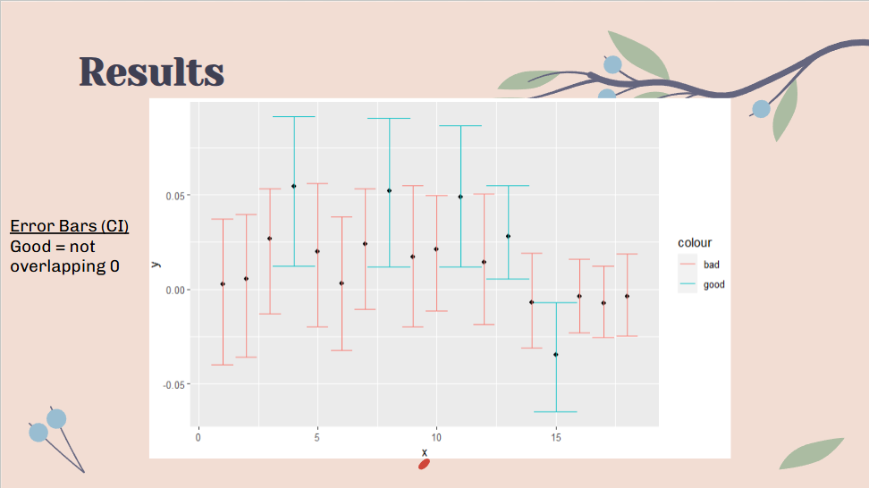
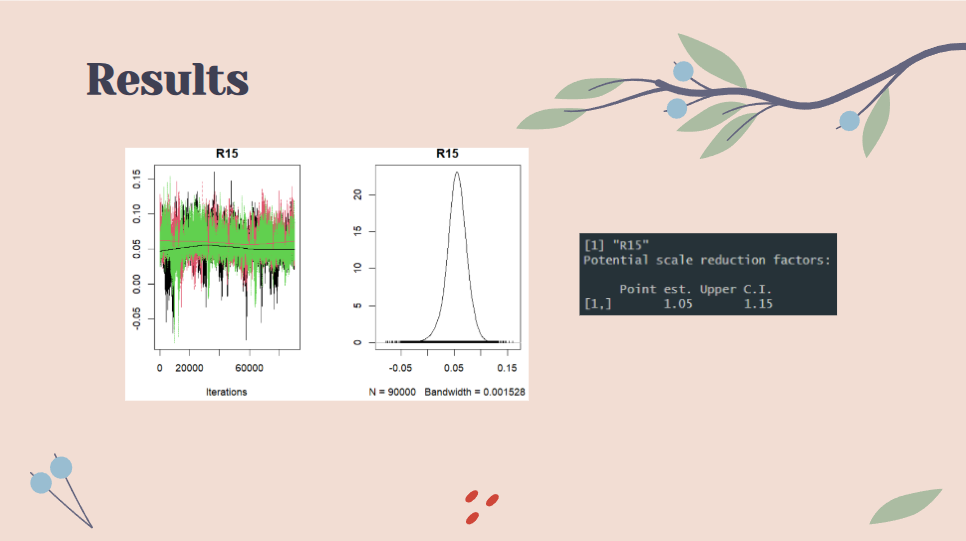

Project overview
I analyzed apparent survival in piping plover chicks to examine whether nest caging was associated with higher post-fledge survival. The project compared chicks from treatment nests (caged) with chicks from control nests (uncaged), and also explored differences among regions.
Methods and findings
- Used chi-squared tests to compare survival proportions between treatment groups.
- Fit logistic regression models to examine treatment and regional patterns.
- Created plots to communicate survival outcomes and model results.
- The analysis did not find statistically significant evidence that caging increased post-fledge chick survival.
- Some regional comparisons suggested lower apparent survival in Region 5; results should be interpreted cautiously because model fit was poor.
Analysis visuals


Limitations
The models estimate apparent survival, which can reflect either death or emigration from the study area. Recapture probability was not directly assessed. The analysis also assumes individual fates are independent, an assumption that may not hold for chicks in the same brood.
Tools and techniques
- R and RStudio: data analysis and visualization.
- Statistical methods: chi-squared tests and logistic regression.
- nimble: used for advanced biological statistical analyses.
What I learned
Working through this analysis showed me how programming and statistical tools can help investigate real conservation questions—and why model assumptions and fit matter when interpreting results. It also helped inspire me to pursue computer science alongside my ecology background.